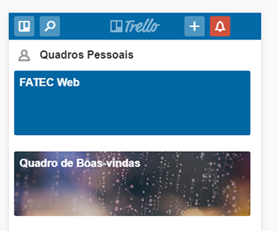

Comunicação da Equipe
A Equipe Web utiliza-se de dois aplicativos para comunicao entre os integrantes: Trello e #Slack. Abaixo uma breve explicacao sobre as ferrramentas.
Trello
O Trello é uma ferramenta de gerenciamento de projetos em listas que pode ser ajustada de acordo com as necessidades do usuário. O Trello pode ser tanto usado por um só indivíduo como para trabalhos em equipe, pode ser acessado através de navegadores ou pelo aplicativo
Utilizando o Trello
No trello sào criados “Boards”, que são quadros que reúnem diversas listas e informações. E podem ser criados de acordo com a necessidade do usuário.
Dentro dos quadros, é permitido escrever comentários, adicionar links, salvar anexos, determinar prazos e acrescentar imagens, especificando o assunto de cada um deles.
Trabalhando em Equipe
Os “Boards” podem ser compartilhados com qualquer um com cadastro no Trello, e as pessoas pode ser marcadas em múltiplos cartões. Por exemplo, é possível determinar as funções de cada membro da equipe de trabalho ao marcá-lo em um “Card” diferente, de modo que todas as pessoas daquele “Board” estejam cientes sobre em cada um está trabalhando no momento – um ótimo jeito para monitorar o que todos estão fazendo.
Além disso, existe um sistema de “Labels” por cores. Essas “Labels” são etiquetas coloridas que podem ser utilizadas para sinalizar o status de determinado projeto ou atividade. Por exemplo, você pode nomear cores especificas para sinalizar itens como “Projeto em Andamento”, “Pronto”, “Adiado”, entre outras possibilidades. Dependendo do contexto do “Board”, elas podem adquirir o significado que você bem entender. Para marcar alguém no Trello e a pessoa receber a notificação, escreva o nome do usuário precedido do “@”.